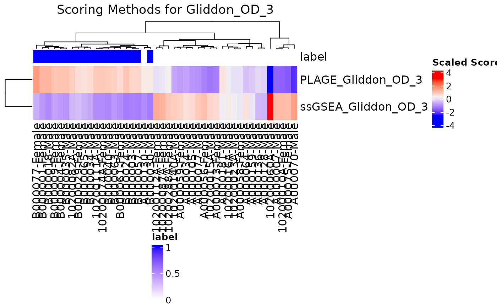

R/profile.R
compareAlgs.RdIt may be useful to compare the results of scoring across several different
scoring algorithms via a method of visualization, such as a heatmap. The
compareSigs function allows the input of a SummarizedExperiment
data object and conducts
profiling on each signature desired, and outputting a heatmap or boxplot
for each signature.
compareAlgs( input, signatures = NULL, annotationColName, useAssay = "counts", algorithm = c("GSVA", "ssGSEA", "ASSIGN", "PLAGE", "Zscore", "singscore"), showColumnNames = TRUE, showRowNames = TRUE, scale = FALSE, colorSets = c("Set1", "Set2", "Set3", "Pastel1", "Pastel2", "Accent", "Dark2", "Paired"), choose_color = c("blue", "gray95", "red"), colList = list(), show.pb = FALSE, parallel.sz = 0, output = "heatmap", num.boot = 100 )
| input | an input data object of the class |
|---|---|
| signatures | a |
| annotationColName | a character string giving the column name in
|
| useAssay | a character string specifying the assay to use for signature
profiling when |
| algorithm | a vector of algorithms to run, or character string if only
one is desired. The default is |
| showColumnNames | logical. Setting |
| showRowNames | logical. Setting |
| scale | logical. Setting |
| colorSets | a vector of names listing the color sets in the order
that they should be used in creating the heatmap. By default, this function
will use the color sets in the order listed in |
| choose_color | a vector of color names to be interpolated for the
heatmap gradient, or a |
| colList | a named |
| show.pb | logical, whether warnings and other output
from the profiling should be suppressed (including progress bar output).
Default is |
| parallel.sz | an integer identifying the number of processors to use
when running the calculations in parallel for the GSVA and ssGSEA algorithms.
If |
| output | a character string specifying whether the outputted plot
should be a |
| num.boot | an integer indicating the number of times to bootstrap the data. |
A heatmap or boxplot for each signature specified comparing the enumerated algorithms.
# Example using the TB_hiv data set, two signatures, and 3 algorithms data("TB_hiv") compareAlgs(TB_hiv, signatures = TBsignatures[c(1,2)], annotationColName = "Disease", algorithm = c("GSVA", "ssGSEA", "PLAGE"), scale = TRUE, parallel.sz = 1, output = "heatmap")#>#> Warning: 2204 genes with constant expression values throuhgout the samples.#> Warning: Since argument method!="ssgsea", genes with constant expression values are discarded.#>#> Warning: 2204 genes with constant expression values throuhgout the samples.#>#> Warning: 2204 genes with constant expression values throuhgout the samples.#> Warning: Since argument method!="ssgsea", genes with constant expression values are discarded.